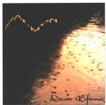

| Artist: | Salmon |
| Title: | Decade Reference |
| Label: | self produced |
| Length(s): | 69 minutes |
| Year(s) of release: | 2001 |
| Month of review: | [01/2002] |
| 1) | Prologue | 2.02 |
| 2) | A Void | 9.50 |
| 3) | Trespassing | 4.36 |
| 4) | Dancing Bird | 4.54 |
| 5) | Inconceivable | 1.03 |
| 6) | A Second Life With Heart And Soul | 21.42 |
| 7) | Houses On The Voorde Banks | 6.39 |
| 8) | Shazz | 6.02 |
| 9) | The Observer | 11.40 |
Trespassing opens with Genesis like piano and also enjoys a bit of the Genesis atmosphere. The waltzy tune again has a strung and memorable vocal melody. The guitar sound is rather noisy, contrasting with the basically very melodic approach. This song about rape and all its consequences again strikes a chord within me and because the band stays away from overmuch frolicking, it comes out well.
Dancing Bird opens with keyboards and piano and is a mellow ballad on which Langereis is assisted by Marina Knip on vocals. Melodically strong, this is a pop ballad if anything.
After a short interlude called Inconceivable we come to the twenty plus minute epic A Second Life With Heart And Soul. In the beginning, and in fact this has happened more often on this album, the music reminds me of Kayak. The song is split into six parts. The first of these is not surprisingly the Overture. In this instrumental the music does not diverge much from what I have already heard so far. I hear mainly a Twelfth Night reference. The song becomes a bit more up-beat in the second, vocal part. I do feel that structurally and melodically the band falls a bit short on this one, in comparison for instance with the first two tracks. This does not mean that the song is bad or that it contains no beautiful parts: the Hackettish solo around the nine-minute mark for instance is really nice. After that the music falls away to start a slow build up, we have now arrived at the fourth part, where the bass plays a low, subtle melody over which the vocalist can sing his rather mellow vocals. The other join in for a bit of harmony singing here, but the result is a bit too cheesy for my tastes. I like it more when the keyboards inject a more mysterious note into the music. Right before (or the beginning of) the fifth part finds us in classical waters. The music does stay kind of subdued and serious up this point. The harmonies on this fifth part is really well-sung, reminding me of Alan Parsons Project. The final part then, The Perspective. This song has quite a bit of guitar with the keyboards mainly in support. The guitar solo is a long one where the sound has quite a bit of distortion. Not a clean and clear solo then. The keyboard solo that follows is a bit too standard. Production wise I expected a bit more bombast and power. The band does succeed well in the melody section with sensitive memorable melodies that often have a classical ring to them (and remind me of Kayak), but I do feel the lack of a certain spark.
The Houses On The Voorde Banks is a darkly opening instrumental. This is a moody and melodic tune with subtle runs of piano and delicate vocal parts. The acoustic guitar reminds of Genesis.
Shazz suffers a bit of lameness. The spaceous acoustic guitar reminds of Hackett's solo work and the vocal melody is not bad with some worthwhile turns in the chorus. It could have been brought a bit more dynamically though. Maybe it is simply a production thing, but the fact remains.
The final track is The Observer. Opening with a frolic piano, it has bit of Middle-eastern melodywise. The song does not depart much from the previous tracks. In it we do find some subtle marimba like sequences that builds up to something more dynamic. At least that was what I hoped, but like earlier on, the band never breaks loose. The music is quite playful though.